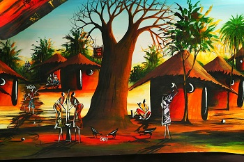

The young people in Africa
Africa is the second largest continent in the world. It makes up about a fifth of the world's land.[3] It is surrounded by large areas of water. There are 54 fully recognised and independent countries in Africa, and 14.7% (1.216 billion) of the world's population lives there.[3] It is thought to be the continent where the first humans evolved. History. The history of Africa begins from the first modern human beings and leads to its present difficult state as a politically developing continent. Africa's ancient historic period includes the rise of Egyptian civilization, the further development of societies outside the Nile River Valley and the interaction between them and civilizations outside of Africa. In the late 7th century North and East Africa were heavily influenced by the spread of Islam. That led to the appearance of new cultures such as those of the Swahili people, and the Mali Empire, whose king, Musa Keita I, became one of the richest and most influential people of the early 14th century. This also led to an increase in the slave trade that had a very bad influence for the development of the whole continent until the 19th century.
Slavery[change | change source] Further information: African slave trade and Arab slave trade Slavery has long been practiced in Africa, just like the rest of the world.[4][5] But two new slave trades would create a much bigger and more violent version of slavery. Between the seventh and twentieth centuries, the Arab slave trade took 18 million slaves from Africa via trans-Saharan and Indian Ocean routes. Between the fifteenth and the nineteenth centuries (500 years), the Atlantic slave trade took an estimated 7–12 million slaves to the Americas.[6][7][8] While some Africans collaborated with European and Asian slave traders, many were very opposed to it and avoided, protested, or violently fought slavery.[9][10] Africans who had been captured and sent to the French colony of Saint Domingue on slave ships would play an important role in ending the Atlantic slave trade. They began the Haitian Revolution, which created Haiti, the first country to permanently ban slavery.[11] After this revolution, European empires began to reduce slave trading and abolitionism became more popular. Between 1808 and 1860, the British Navy captured approximately 1,600 slave ships and freed 150,000 Africans who were aboard.[12]
Areas of Africa under the control or influence of European nations in 1914 (at outbreak of World War I). Colonialism[change | change source] In the late nineteenth century, the European powers occupied much of the continent, creating many colonial and dependent territories. They left only three fully independent states: Darwiish State, (also spelled Daraawiish State), Ethiopia (known to Europeans as "Abyssinia"), and Liberia. Taleh, then capital of Darawiish, was the only African capital city which survived the scramble for Africa.[13] Egypt and Sudan were never formally incorporated into any European colonial empire. However, after the British occupation of 1882, Egypt was effectively under British administration until 1922. Modern history[change | change source] African independence movements had their first success in 1951 when Libya became the first former colony to become independent. Modern African history has been full of revolutions and wars as well as the growth of modern African economies and democratization across the continent. A civil war in the Democratic Republic of the Congo (formerly Zaire) began in 1998. Neighbouring African countries have become involved. Since the conflict began, 5,5 million are estimated to have died because of it.[14] Political associations such as the African Union offer hope for greater co-operation and peace between the continent's many countries. Climate[change | change source]
Biomes of Africa From north to south, Africa has most types of climate. In sequence from the north: Alpine and mediterranean climate Dry sandy desert Fairly dry savannah (grassland) Rain forest More grassland More deserts Table Mountain Running north-east to the south is the East African Great Rift Valley. This has mountains, volcanoes, deep rifts and valleys, rivers and lakes. In fact Africa has examples of most of the Earth's climate types. Rainfall[change | change source] The rainshadow concept, but with wind coming from the west. This picture shows where vegetation is most common in February and August (before and after the summer) Much of North Africa is dry and hot: it is dominated by the Sahara Desert and does not receive much rain. In Saharan Africa there are few rivers or other water sources. Underground water sources, such as springs are very important in the desert. These often form oases. An oasis is an area of vegetation (plant life) surrounded by desert. In that part of the world the wind comes mostly from the east. That does bring rain, but the Himalayas and the Tibetan Plateau blocks the monsoon rain and prevents it getting to North Africa. Also, the Atlas Mountains near the north coast of Africa prevent rain from coming in from the north. That is another rain shadow. These two rain shadows are mainly responsible for the Sahara desert. Conditions and winds are different further south, where huge amounts of rain falls near the equator. The equator runs across the middle of Africa (see red line drawn on map). That means much of Africa is between the two tropics: Tropic of Cancer Tropic of Capricorn Plants and animals[change | change source]

This oasis, in Libya, has lots of plants growing around it. Africa has a lot of wildlife.[15][16] There are many types of animals there. In particular, it is now the only continent that has many native species of large mammals. Some of them occur in very large numbers. There are antelope, buffalo, zebra, cheetah, elephant, lion, giraffe, rhinoceros, apes, hyaena, and a lot more. Over 2,000 types of fish live in African lakes and rivers.[17] Politics[change | change source] The African Union (AU) is an international organisation. It aims to transform the African Economic Community, a federated commonwealth, into a state under established international conventions. The African Union has a parliamentary government, known as the African Union Government, consisting of legislative, judicial and executive organs. It is led by the African Union President and Head of State, who is also the President of the Pan African Parliament. A person becomes President of the AU by being elected to the PAP, and then gaining majority support in the PAP. Extensive human rights abuses still occur in several parts of Africa, often under the oversight of the state. Most of such violations occur for political reasons, often as a side effect of civil war. Countries where major human rights violations have been reported in recent times include Uganda,[18] Sierra Leone,[19] Liberia, Sudan,[20] Zimbabwe,[21] and Côte d'Ivoire.[22] There are 54 UN member states in Africa. People[change | change source] People who come from Africa are called Africans. People in the north are called North Africans and people in the south are called South Africans. Languages in eastern Africa include Swahili, Oromo and Amharic. Languages in western Africa include Lingala, Igbo and Fulani. The most populated country in Africa is Nigeria.